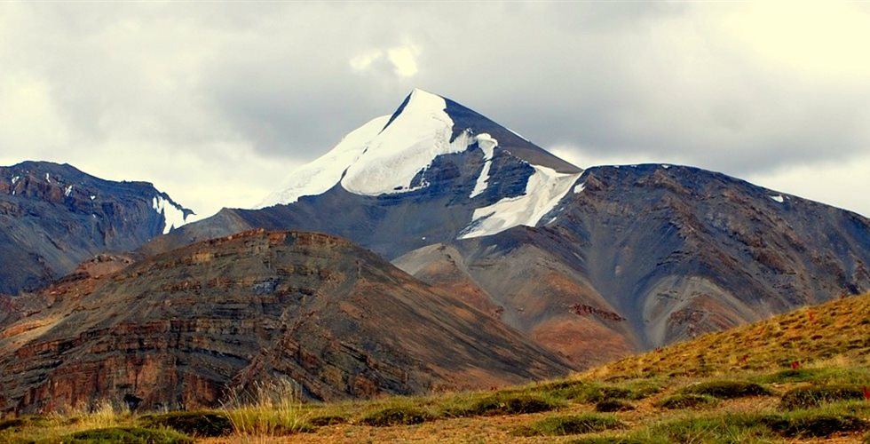
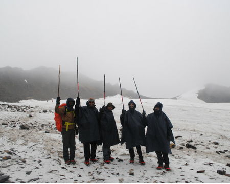
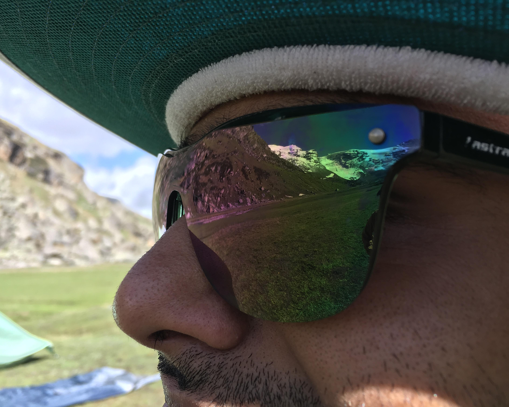
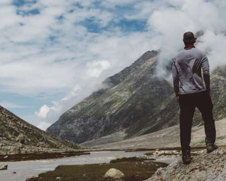
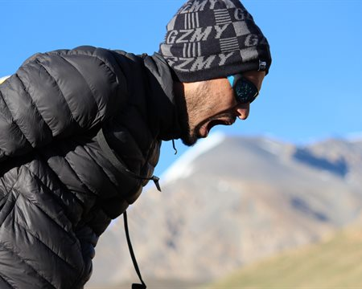

Kanamo Peak Trek
Available Batches
Brief Description


Brief Itinerary
Detailed Itinerary
Day 1
Arrive in Manali (6700 ft) and stay there
Take an overnight Volvo bus from Delhi and Arrive in Manali on the morning of this day. This day is important from the perspective of acclimatization as we will be going to Kaza the very next day which is at quite a high altitude of 11980 Feet. It is recommended that you pre-book your hotel in Manali online. Explore the town of Manali during the day. There is Hidimba temple which is quite popular. Spending some evening time on the mall road of Manali is also not a bad idea. Keep yourself away from alcohol on this day & for all coming days of the trek.
Day 2
Drive from Manali to Kaza (12000 Feet) (200 km approx.)
Drive to Kaza is grueling already. Not to make it more difficult we should leave quite early to avoid traffic before Rohtang Pass. Road condition after Rohtang Pass is very bad so brace yourself for it. To compensate for the bad roads there will be beautiful vistas of Spiti to accompany you all the way to Kaza. They look straight out of a postcard. After a long drive of approx. 10 hours we arrive in Kaza. Stay will be on twin or triple sharing basis in Hotel/Guesthouse.
Day 3
Drive from Kaza to Kibber (14050 Feet) – 19 Kms on road
Post breakfast, we will take a short road drive to Kibber, which is the last road head for this trek. Kibber is a considerably large village in Spiti Valley. The key monastery is the main attraction of Kibber. We will visit the monastery. You get to interact with the monks who are very welcoming & read the manuscripts if you like as well. Acclimatization walk is very important at this altitude. We will gain some altitude and back to our guest house. In the evening experience the peaceful & harsh surroundings of this wonderful land. Sleep early as from tomorrow the trek begins. The day is earmarked for rest. Remove all the stress accumulated over long road journeys and get refreshed before we start preparing for actual trek.
Day 4
Rest and acclimatization
We have already reached high altitude area and acclimatization process is extremely necessary here. From past experiences, we have realized that the biggest challenge for Kanamo peak trek is its altitude and acclimatization would be critical for your success chances here. We will go for an acclimatization walk today that would be around 2-3 hours long. Acclimatization walk is very important at this altitude. We will gain some altitude and back to our guest house. In the evening experience the peaceful & harsh surroundings of this wonderful land. Sleep early as from tomorrow the trek begins.
Day 5
Trek from Kibber Village to Kanamo Base Camp (6-7 hours) (15700 Feet) – 7.5 Kms of trekking
Post breakfast & briefing the trek begins. We walk through rocky retain, grasslands & dessert valley. The trail is a gradual ascent in the first half of the trek, then it becomes flat with gradual ascent in the last leg again. There are two lakes on the way. One of these supplies water to Kaza village. We are expected to reach the base camp by the afternoon. In the late afternoon. we will go for an acclimatization walk. Do not sleep. Staying awake helps your body to acclimatize but don’t exert either. Rest is important for your body to acclimatize. We will have a very early dinner (around 1900 Hrs) and allow our body to digest the food easily by staying awake and taking small walks for the next 2-3 hours. Post dinner retire to bed in camps.
Day 6
Kanamo Base Camp to Summit Camp – around 2.5 Kms of trekking
As we wake up in the morning, we shall do Pranayams. The day would be critical to assess the readiness of our team for the summit attempt. We will start our trek to the summit camp in late afternoon. The summit camp would basically be the base of second shoulder from base camp towards the summit of Kanamo Peak. We cross the first shoulder in 3-4 hours and walk on flatter terrain for 1-2 hours more before we occupy the summit camp by around 1900 Hrs. Exact location of the summit camp is not pre-determined and would be decided as per the water and other resource availability. However, the idea is to gain around 2300 to 2500 ft. altitude today so that the summit attempt next morning is more feasible. The walk over the scree/snow is very steep. The scree (more visible in the June batches) keep sliding down as you move on them which makes it even more difficult. If you haven’t been to such altitude before you will realize how difficult it is to even take a single step. Do not hesitate in asking for help to avoid chances of slipping down. The dinner tonight would be very light because we have to start the summit climb by around 0400 - 0500 Hrs next morning.
Day 7
Kanamo Summit Camp to Kanamo Peak (19500 Feet) and back to base camp (6-7 hours) – 4.5 Kms of trekking
We wake up at 0300 Hrs and the summit attempt begins at 0400 Hrs. There are two steep inclines that we need to climb today. The first one is extremely steep and should take almost 3 hours to complete. The view opens up immensely after we climb this section. One can see multiple peaks on the eastern side include Shila peak. It should take another 3 hours to climb the last ridge of the Kanamo Peak. All the pain turns worth as you reach the top. The view is rare! Pin Parvati Pass & Parang La can be seen from here. The complete range of Kinnaur region is visible. Also, notice the twin sister of Kanamo Peak; Shila peak which is mostly covered in snow. Absorb the view for a while and start descending back to the base camp.
Day 8
Trek from Kanamo Base Camp to Kaza (3-4 hours) – 7.5 Kms of trekking & 19 Kms on road
We trek back to Kibber by the same route. From Kibber we drive to Kaza on the same road.
Day 9
Drive from Kaza to Manali (10 Hours)
Start early morning drive from Kaza to Manali. Expect to arrive in the Manali by the evening. The trip ends here. *Please note that some changes might be done to the itinerary during the trek depending upon weather or team acclimatization situation. So, either Day 7 & 8 may be merged or Day 4 rest may be cancelled, in order to allow for an extra day before summit attempt that may be used either for load ferry to the Summit camp
What's Included
- Meals during the trek
- Forest Permits/Camping Charges/Permits, Trek Permit Fee/IMF Permission (Upto the amount charged for Indian nationals)
- Camping tents, Temp rated sleeping bags, mattress
- Safety Equipment includes static rescue rope, seat harness, carabiners, pulleys
- Mountaineering course certified Trek Leader with Wilderness Emergency Responder & Rescue. course from NIM Uttarkashi
- First Aid Certified Local guide, cook, helpers
- Porters or mules for carrying common luggage
- Transportation from Kaza to Kaza
- Guest house stay on triple sharing basis on Day 2, 3, 4 & 8
What's Not Included
- Meals during road journeys, if any
- Any kind of Insurance
- Any expense of personal nature
- Any expense not specified in the inclusion list
- Carriage of personal rucksack
- Meals during Hotel / Guest house Stays, if any
Are you Eligible for this Adventure?

BRS Level Required
Packing List
Frequently Asked Questions
Should have at least 7-10 trek days in the Himalayas in their kitty. For the trek’s achieving more than 5000 meters, a person must have a prior experience of trekking at altitudes of or more than 3700 meters
One should be familiar with the following:
- Know campsite basics like how to use a sleeping bag, sleeping tent, toilet tent
- Ascending & Descending technique for mountain trails
- Basic mountain mannerisms
- Ascending & Descending on snow
- Basics of Mountain Sickness
- Basics of Mountain Hazards
- How to cross small water streams
- Jog/Run for 5 Kms in 25-30 mins or Walk continuously for 10 kms (with 3-4 small breaks) on plain terrain (slight incline is better) - You would be required to produce a screenshot from a fitness app testifying the same
- Hold your breath for 30-35 seconds
If you are not meeting these benchmarks, please use the preparation schedule to improve your fitness till you achieve the above benchmarks.
Kanamo Peak Trek
The Kanamo peak trek is meant for those who are looking to push their limits. The altitude gain during the trek must not be taken lightly. Trekkers who opt for Kanamo Peak trek must have some prior experience of a high altitude Himalayan trek. The name 'Kanamo' is composed of two words, Ka and Namo which means "a white lady" and the trail of the trek does justice to the beautiful name of the peak. From the summit, one gets grand views of Ladakh, Spiti, Pin Parvati Pass, Parang La and peaks of Kinnaur side.
The best season to do this trek is the summer season. The months of July - August are the best months to do this trek.
The base of the trek is Kibber. We will drive from Kaza to Kibber. The distance of around 19 km is covered.
From the Kanamo Basecamp, we trek halfway and then take a cab ride to Kibber.The base of the trek is Kibber. We will drive from Kaza to Kibber. The distance of around 19 km is covered.
From the Kanamo Basecamp, we trek halfway and then take a cab ride to Kibber.
The only cellular network is only available till Kaza that of BSNL.
The small town of Kaza is famous for its monasteries and local markets.
The minimum age limit is 13 years. However, minors aged between 13 to 17 should be accompanied with their parents or guardians.
If you are above the age of 60, kindly carry a medical certificate from your doctor that deem you fit for adventure activities like trekking.
We will stay at a guesthouse in Manali and will camp during the rest of the trek.
We use four-season tents and the sleeping bags we use are rated from -15 to -20 degree celcius.
We dig dry pit toilets and set up one toilet tent for a batch of seven people.
The temperatures vary between 19 - 8 degree Celsius during the summer seasons.
A trek leader will be assigned to lead you on the trek.
We will drive from Kaza to Kibber which is the base village and back to Kaza at the end of the trip.
NA
Why Bikat?

Small Group Size
Our batch sizes are capped at 15 for smaller treks with the trek leader and trekker ratio of 1:8. This ratio, in our years of experience, has proven to deliver the best trekking experience for individuals as well as groups. Capping the size of the group ensures individual attention to each trekker so that no signs of distress or need during the trek go unnoticed. It also helps to form a more cohesive cohort with better group energy which helps define the rhythm and pace of days on the trek. As you go higher up on the BRS scale, since the stakes are higher, expeditions have an even smaller group size with the ratio of expedition leader to climber set at 1:2.

Qualified Trek Leaders
We follow a rigorous regime of hiring and training our experts in the field. Each trek leader is a certified mountaineer with years of experience in the field. In addition to their qualification, they also go through practical and situational training to tackle any and all kinds of sudden conditions that may present themselves on the ground. Being unpredictable is the core nature of the mountains but being ready for any circumstance as best as possible is a controllable asset that we try to nurture. Our field experts are also trained in basic medicine and first-aid response. Watch: Forerunners - The Making of A Trek Leader At Bikat Adventures

Guided Progression
Since Bikat Adventures is a learning-based organization, we help you climb up the ladder of difficulty within the sphere of outdoor adventure systematically. Our on-ground training modules are designed to handhold you through the upskilling process so that you are ready to take on bigger challenges.

Equipment Quality and Check
All the gear used on our treks and expeditions is tried and tested, maintained for good quality, and is overall top-notch in quality and condition. We are continually looking to obtain the best of everything there is in the market so as to ensure optimum safety.

Support Systems
Along with the staff you see on-ground, we have a team of superheroes working in the background to give you the best experience possible. Our background team also comprises local staff from each area who know the region best. Having local support helps with studying the area, pre-planning, execution, and in receiving timely support in case of emergencies in these remote locations.

Communication
Our on-field staff is in constant contact with our teams based in primary locations so as to eliminate any avoidable delay in reaching additional help and support when required. We try to use the best tools for communication available, including satellite phones, in regions where they are not restricted.
What our customers Say


Cancellation Policy
Cash refund
Cancellations up to 30 days prior to departure date
Cancellations between 30 days to 15 days prior to departure date
Cancellations within 15 days prior to departure date
Voucher refund
Cancellations up to 5 days prior to departure date
Cancellations within 5 days prior to departure date
Please Note:
- Cash refund is applicable only in case of bookings made without using any promotional offer code or vouchers. "Cash Refund will be processed in 7-14 working days."
- This is only a brief of cancellation terms. For finer details please refer Detailed Cancellation Policy.
Blog Posts

Know How
Ascending and Descending on Trails
It is critical to understand the concepts of ascending and descending on varied terrain. This lowers the risks of falls, stumbles, strain, and sprains along with conserving energy. The important aspects of ...
Read full

How to use a Trekking Pole : Benefits & Precautions
Know How
How to use a trekking pole: 101
To use or not to.
It is an unending debate when it comes to the topic whether to use a trekking pole or not. You will always find people divided into two groups- against and in favor of using the pole on a tr...
Read full

Know How
How to select a perfect pair of trekking shoes?
Give a trekker a right pair of trekking shoes, and he or she can conquer any mountain.
That being said, a pair of trekking shoes is the most important gear for a trekker. A tre...
Read full

Eye Protection 101 - How to Choose Sunglasses
Know How
Last week, we told you about protecting yourself from sunburn and worse in our Sun Protection 101 blog. Surprise, surprise - your eyes need protection from harsh UV rays as well.
India receives almost 3000 hours of sunlight in a year, which is why i...
Read full

Know How
MOUNTAIN FEATURES THAT MUST BE A PART OF ANY TREKKER’S VOCAB!
While the terminology used in mountaineering is complex but the features that I am going to talk about are mostly the common ones. When we go to the mountains, trekking or otherwise...
Read full

Know How
The FIRST AID modules provide information on caring for injuries and sickness in a backcountry environment when you are hours or even days away from definitive medical care, with focus on what is commonly encountered in the mountains. These...
Read full

Trekking Offers And Discounts
Informative
Winter Treks Offer
Book now and save 14% on all winter treks.
Min Transaction Value: 30K
Offer valid on Limited Spots.
Offer Valid till 31st January 2020.
Use Code: WINTER14
View Treks
...
Read full

Catching AMS is easier done than said!
Know How
Catching AMS is easier done than said!
Don’t you feel so?
AMS (Acute Mountain Sickness) approaches everyone and unfortunately worst affected are the most experienced ones. They feel that they know it and can counsel any new-comer on the do&rs...
Read full


{kind=link}
{kind=link}
{kind=link}
{kind=link}
{kind=link}
{kind=link}
{kind=link}
{kind=link}
{kind=link}
{kind=link}
{kind=link}
{kind=link}